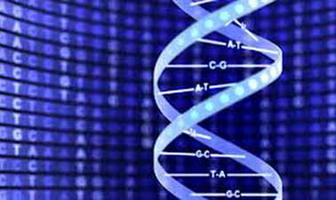
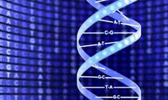

Unit 2: Biochemistry: Proteins, Enzymes, Glycolysis
By Alejandro Avella
August 15, 2024
Proteins, Enzymes, and Glycolysis Overview
Videos with Professor Lander
In a series of videos Professor Lander will
- provide examples of amazing proteins, an overview of protein structure, and how protein structure is related to protein function,
- provide a description of enzymes, a class of proteins that are involved in the remarkable transformations within a cell,
and provide an exploration of glycolysis as an example of a multistep enzymatic pathway.
Lab Videos
In a series of lab videos Nathaniel will
- show you the principles behind GFP protein purification,
- and show you the principles behind β-galactosidase protein purification.
In the final video, Brian will
- walk you through the steps involved in determining the secondary, tertiary, and quaternary structure of a protein.
Practice Assessments
- concept questions following each video (Test Yourself questions)
- Practice Problem Set: Biochemistry
Lectures:


Teaching assistant lectures
Reading Chemical Structures


Polarity of Molecules


Intermolecular Bonding


Questions: